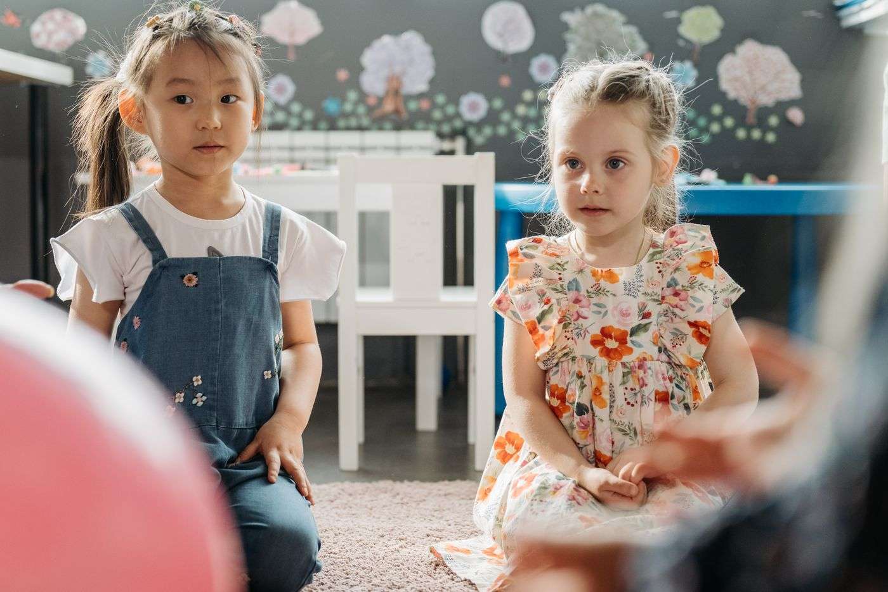
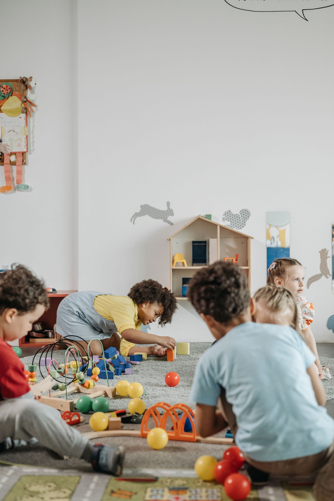
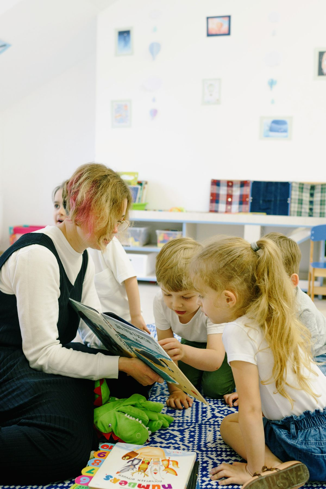
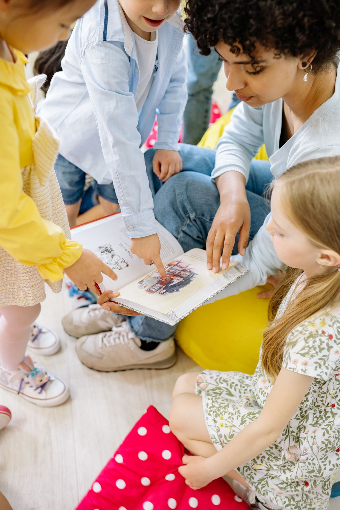

Hravá angličtina
Spievame, recitujeme a nové slová objavujeme prirodzene počas hry.
Láskavé miesto, kde sa deti učia hrou, objavujú svet vlastným tempom a každý deň sa cítia bezpečne.


Ilustračné fotografie

Ilustračná fotografia
Útulné priestory, skúsený a priateľský personál a uzavretý dvor vytvárajú zázemie, kde sa deti môžu cítiť bezpečne a prijato.
Menší kolektív nám umožňuje venovať pozornosť každému dieťaťu. V každodenných aktivitách prepájame hru, pohyb, tvorenie, hudbu, Montessori prvky a hravú angličtinu.
Individuálny prístup
Rešpektujeme tempo, potreby a osobnosť dieťaťa.
Objavovanie cez hru
Podporujeme samostatnosť, zvedavosť a radosť z učenia.
Celostný rozvoj
Pohyb, tanec, hudba, tvorivé dielne aj vzťah k prírode.
Od ranného privítania po posledné hry. Pravidelný rytmus dáva deťom istotu a dosť priestoru na objavovanie.

Ilustračná fotografia
Hra je pre deti ten najprirodzenejší spôsob, ako spoznávať svet.
Spievame, recitujeme a nové slová objavujeme prirodzene počas hry.
Tancujeme, cvičíme, vnímame rytmus a rozvíjame radosť z pohybu.
Kreslíme, maľujeme, modelujeme a skúšame nové nápady.
Triedime odpad, pozorujeme prírodu a učíme sa starať o svoje okolie.
Vyberte si režim, ktorý vám vyhovuje. Radi vám pri rozhodovaní poradíme osobne.
5 dní v týždni · 7:30 – 12:30
Dieťa od 18 mesiacov · 5 dní v týždni
7:30 – 17:00
Dieťa do 18 mesiacov · 5 dní v týždni
7:30 – 17:00
10 % pri celodennej a 5 % pri polodennej starostlivosti.
Desiata 0,80 € · obed 3,50 € · olovrant 0,80 € za deň. Strava nie je zahrnutá v mesačnej cene.
Individuálna starostlivosť mimo prevádzkových hodín po dohode.
Uvedené ceny zahŕňajú čerstvé ovocie, zeleninu a pitný režim. Cenník je prevzatý z pôvodného webu klienta; pred zverejnením ostrého webu ho treba potvrdiť.
Výber z hodnotení uverejnených na pôvodnej stránke Baby’s world.
„Ten čas strávený vo Vašej škôlke bol neskutočne úžasným prínosom pre Mišku a samozrejme aj pre mňa.“
„Pre nás ste a aj ostanete výnimočný človek, pretože som Vám od začiatku dôverovala tak ako keby sme sa poznali niekoľko rokov.“
„Ďakujeme ešte raz za knižku, lepšie ste sa ani trafiť nemohli, je to teraz jeho najobľúbenejšia rozprávka.“
Napíšte nám pár základných údajov. Ozveme sa vám a spoločne sa dohodneme na ďalšom postupe alebo návšteve.
Rodné číslo ani ďalšie citlivé údaje dieťaťa pri prvom kontakte nevyžadujeme.
Najlepší pocit zo škôlky získate pri návšteve. Radi vám ukážeme, ako fungujeme, a odpovieme na všetky otázky.
Zavolať námMomentálne nehľadáme nových kolegov. Ďakujeme za záujem.